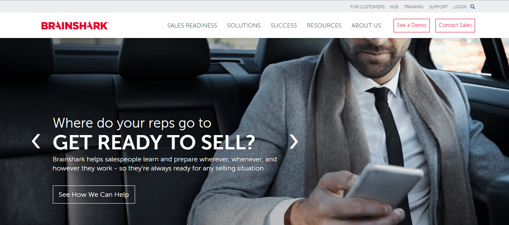
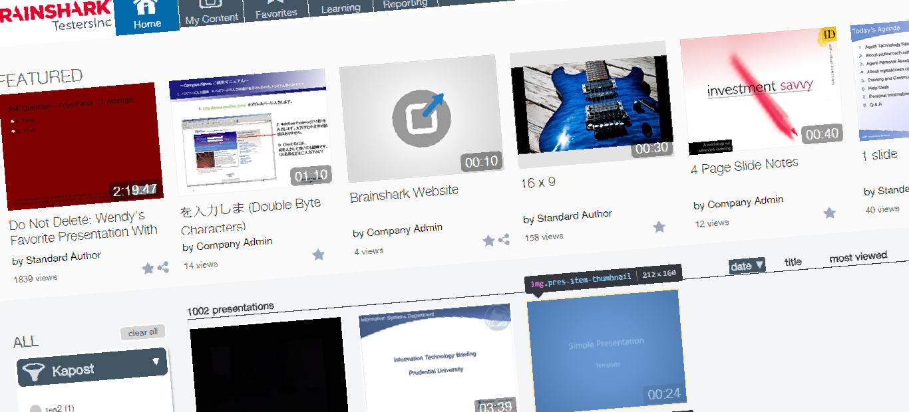
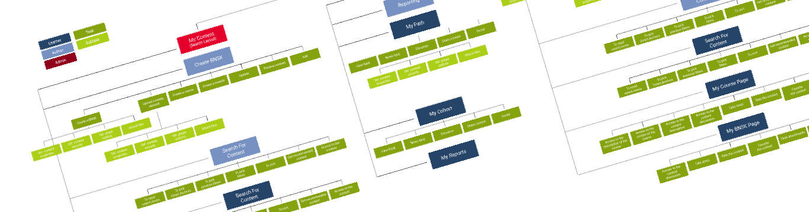
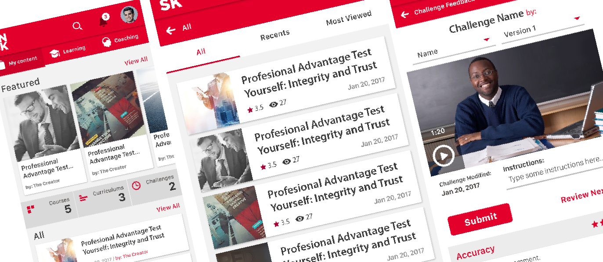

BrainShark, a Boston-based Salesforce training platform, empowers sales reps by providing coaching, content creation, and interactive learning tools. As the UX/UI Lead Designer, I collaborated with product and engineering teams in Boston to improve the overall user experience across both web and mobile platforms.
By leveraging a user-centered approach, I conducted on-site research, stakeholder workshops, and contextual user interviews to uncover pain points, align business goals, and develop a cohesive design strategy that streamlined the platform’s usability and efficiency.

Our initial research revealed a lack of consistency in user experience across different product areas. Users faced:
Additionally, some design patterns were not effectively implemented, which led to usability issues and frustration among users.

To fully understand the needs and behaviors of sales reps and trainers, we traveled to Boston for in-depth user research. This included:
These insights enabled us to map user goals, pain points, and workflows, leading to a human-centered redesign of BrainShark’s training experience.
By developing detailed personas, we identified key user needs and behaviors, allowing us to optimize interactions for both experienced sales reps and new users. This helped us refine:
A thorough content inventory and IA audit revealed areas for improvement in content organization. We restructured the platform by:

This resulted in a clear, structured, and scalable information architecture, reducing cognitive load and enhancing usability.
The redesign of the BrainShark web app and the introduction of the iOS & Android mobile apps significantly improved the sales training experience by:
We work a lot in the searchability of the user, and also in the categorization of the content to be found through a contextual searching.

By applying UX best practices, human-centered design, and strategic research methodologies, we created a seamless, scalable, and effective training platform for sales professionals.S